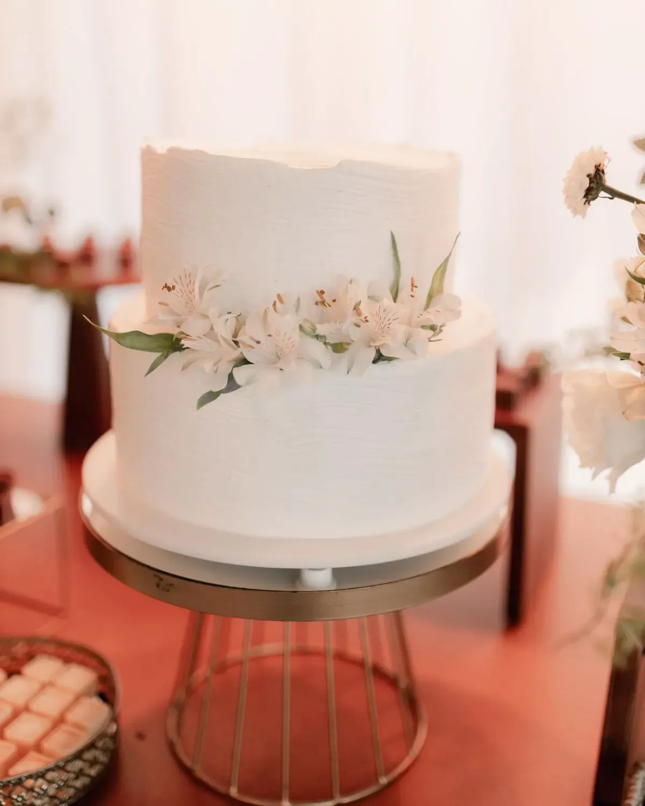
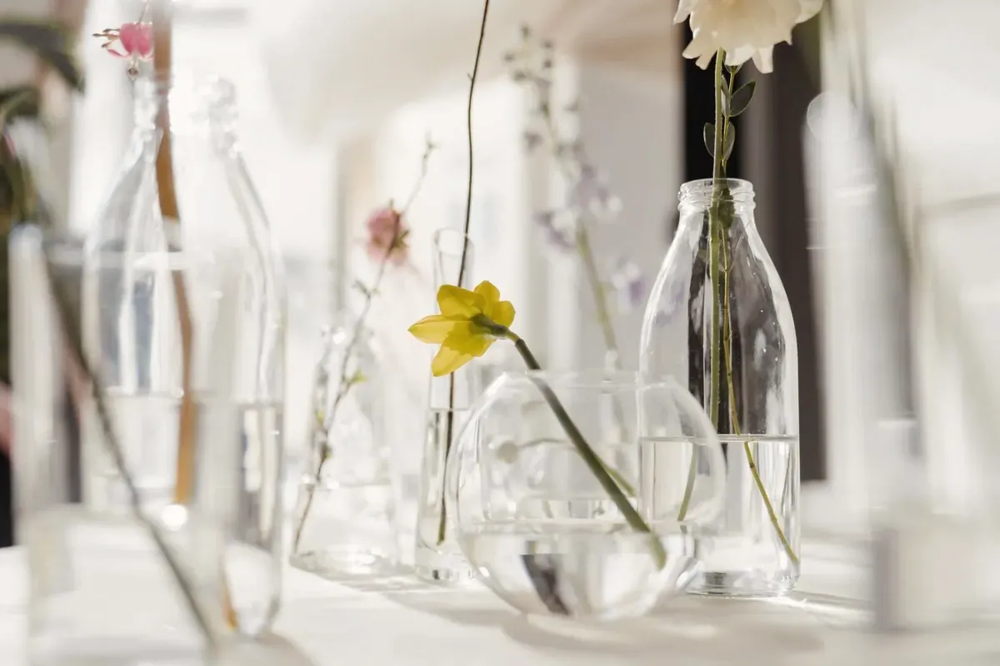

What I do, and what I won’tso nobody’s surprised later

Everything on this list touches how the room looks. That’s the test.
- Design direction and paletteI pick the colours and I’ll defend them.
- Florals, grown and sourcedSome from my own rows, the rest from growers I’ve been pestering for a long time.
- Tablescape and stylingLinen, glass, plates, candles, the whole table.
- Installation and strike on the dayI put it up, and I take it away again afterwards.
- Supplier casting and day-running for the designI find the people who can make the look happen, and I run them on the day.
What I don’t do
People assume styling includes all of this. It doesn’t, and I’d rather lose you now than argue with you later. If you need these things done, hire a planner as well. I’ll happily work alongside one.
- Guest logistics and seatingYour seating plan is yours. I’ve seen what it does to people.
- Officiant and ceremony adminI’ll dress the room for it. I won’t do the paperwork.
- Hotel blocksNot my world, and I’d be bad at it.
- TransportIf it has wheels, it isn’t mine.
- The budget spreadsheet for the whole weddingI’ll keep the numbers for the room. The rest is yours.
- Anything to do with the bandI love the band. The band isn’t mine.

How I cast suppliers
A look lives or dies on who’s making it. I find the growers, the linen people and the extra hands for each job, based on the design and on who I’d trust with it. I don’t keep a preferred list and nobody pays me to be on it.
Anything overhead, and candles
Overhead installations and candles are agreed with the venue, and the venue’s rules decide. I ask before I design anything for the air or anything with a flame, and if the answer is no, the design changes.
Access and dietary needs
I ask every venue how people get in, get around and reach the table, and what the kitchen can do. I pass on what they tell me. Those are their answers, so please check them with the venue yourself.

Small tables count too
A dinner in somebody’s kitchen gets the same eye as a marquee. The share works the same way, it just comes to less.
A single stem in the right glass beats a big arrangement in the wrong room.